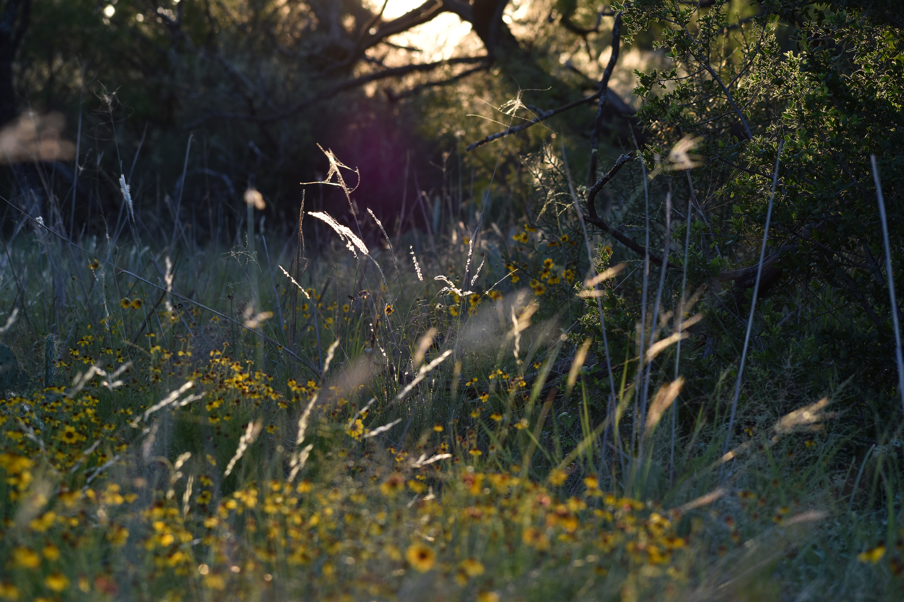
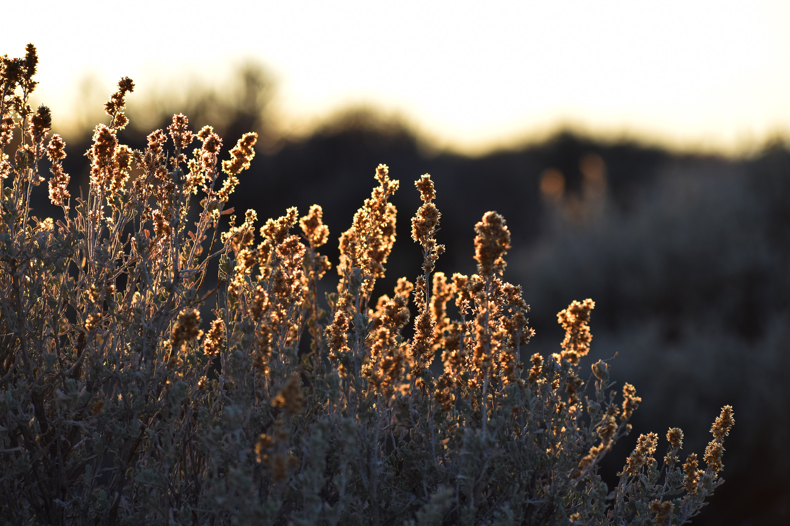

Photos
I also take more traditionally sized photos. I particularly enjoy trying to capture the "glowing" effect created by a strong light source behind a partially translucent object (such as leaves and other vegetation at sunrise or sunset), as well as playing around with interesting lighting conditions.
Click on an image to open in a new tab. Full size images are available on request. All images
CC BY-NC 4.0.


ReflectionCollege Station, Texas
2880 x 6020f/5.61/100sISO-12800185mm

ClearingEnchanted Rock, Texas
6000 x 4000f/6.31/160sISO-100102mm

Glow: GrassArroyo Seco, New Mexico
6000 x 4000f/5.61/200sISO-200112mm

Yellow On BlackArroyo Seco, New Mexico
6000 x 4000f/5.6Jan-00sISO-400300mm

(Not) LightningCollege Station, Texas
6000 x 4000f/5.61sISO-160030mm

Glow: LeavesMuir Woods, California
6000 x 4000f/6.31/100sISO-100105mm